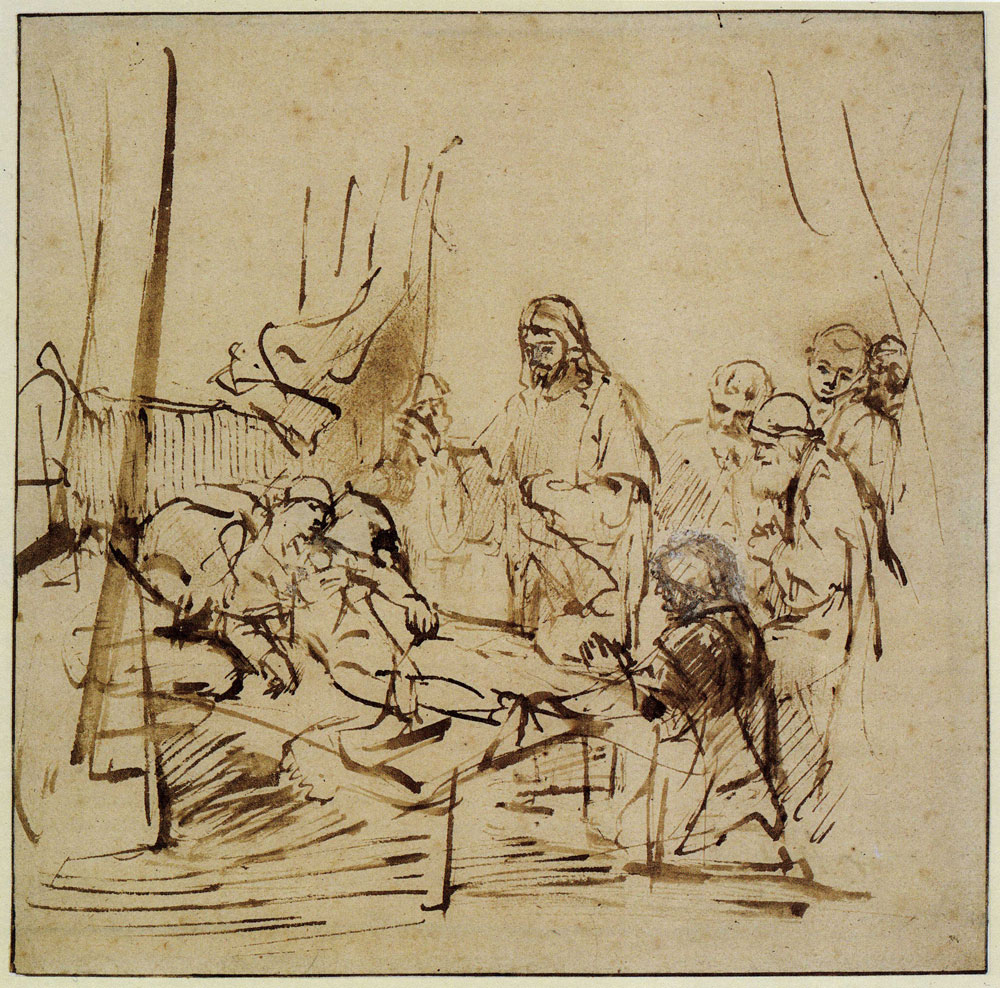

Matthew 9:24
he said, "Go away, for the girl is not dead but sleeping." And they laughed at him.

Rembrandt, The Raising of the Daughter of Jairus, Pen and bistre, wash, in some places covered with white body-colour, c. 1660-62
18 While he was saying these things to them, behold, a ruler came in and knelt before him, saying, “My daughter has just died, but come and lay your hand on her, and she will live.” 19 And Jesus rose and followed him, with his disciples. 20 And behold, a woman who had suffered from a discharge of blood for twelve years came up behind him and touched the fringe of his garment, 21 for she said to herself, “If I only touch his garment, I will be made well.” 22 Jesus turned, and seeing her he said, “Take heart, daughter; your faith has made you well.” And instantly the woman was made well. 23 And when Jesus came to the ruler’s house and saw the flute players and the crowd making a commotion, 24 he said, “Go away, for the girl is not dead but sleeping.” And they laughed at him. 25 But when the crowd had been put outside, he went in and took her by the hand, and the girl arose. 26 And the report of this went through all that district.